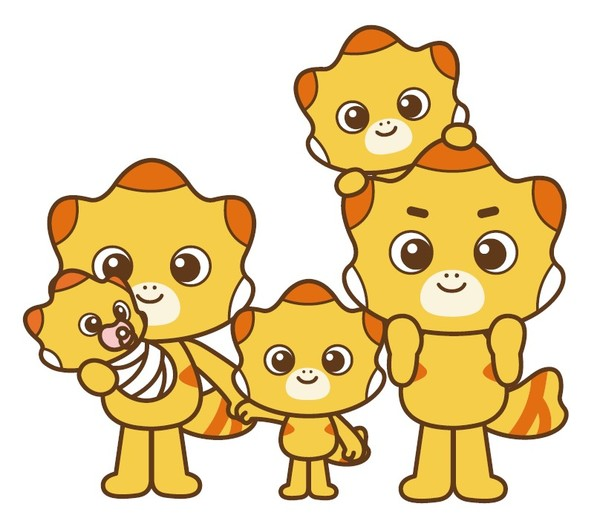

발표 01PHYSICAL AI · DIGITAL TWIN
피지컬AI와 디지털트윈
피지컬AI와 디지털트윈이 물리 세계와 디지털 세계를 어떻게 연결하는지 살펴봅니다.
최원진발표자
최원진님의 유튜브 채널 ↗
2026 WINTER MEETUP
혼자 만들던 이야기, 함께 나누면 더 재밌으니까.
경기남부 개발자들의 따뜻한 만남에 초대합니다.
개발 이야기와 새로운 연결이 기다리는 토요일
2026 여름 행사 발표 영상 보기 ↓
반가워요,THE STORIES WE SHARE
직접 만들어 본 경험과 고민을 나눕니다.
네 개의 발표, 네 가지의 새로운 시선.
피지컬AI와 디지털트윈이 물리 세계와 디지털 세계를 어떻게 연결하는지 살펴봅니다.
발표자 · 신재익
발표자 · 주제 추후 공개
발표자 · 주제 추후 공개
행사는 오후 1시에 시작합니다. 세부 시간표와 추가 발표는 추후 안내합니다.
YOUR STORY BELONGS HERE
만들어 본 것, 배운 것, 함께 고민하고 싶은 것.
경기남부 개발자들과 나누고 싶은 이야기를 들려주세요.
COMMUNITY
행사 이후에도 개발 이야기를 함께 나눠요.
2026 SUMMER · SESSION VIDEOS
2026년 여름 행사에서 나눈 이야기를
다시 만나보세요.
경기남부에서 시작되는 다음 연결.
참가 신청하기 ↗